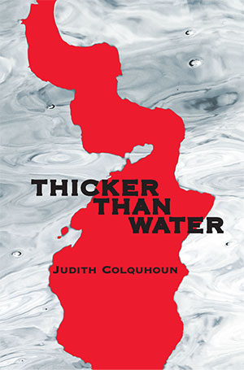
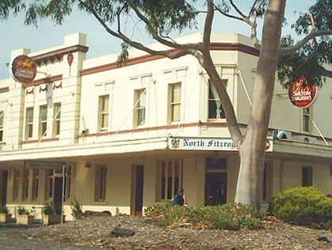

|
|

|
|
Book
Description
|
Writers and artists had come
here for centuries but she was neither. She was not even seeking a new
lover or running away from an old one. No, her mission was altogether
different. And the fact that she came in a Boeing instead of a chariot
drawn by griffins should not have encouraged anyone to doubt the
seriousness of her purpose. Lucy was Nemesis. She had come to settle a
very old score.
|
As her mother Kate lay dying, Lucy O’Connell had learnt of
a rape committed in Carlton by a young Italian boy. Not the best
introduction to the parent she had never known and, yes, it was a long
time ago, but Lucy believes it is never too late for justice.
Wary of the amorous Stefano’s assistance, she battles her way through
Italian bureaucracy and finally traces her father, Paolo Esposito, to
his restaurant by a beach in southern Italy. There she meets his wife
Silvana and her own half-siblings: cheeky Andrea, studious Chiara,
scatty Rosaria.
She lives an uneasy lie with this new family. She obsesses over how to
punish her father without hurting the others. Violent forces gather.
Still she ignores the friends, who insist that penitence can be more
real than a mumbled rosary might suggest. That la vendetta is not the
work of gods but of devils.
Cover
photograph: Lucia Rossi – Water Profile
Cover design: Gail Hannah
ISBN 978-1-876044-87-9 (paperback)
Published 2014
296 pgs
$27.95
Book Sample
Prologue
Lucy hoped the plane would
not choose this particular moment to plummet from the sky. While the
entrance to the underworld was, she knew, some forty kilometres west at
Lago d’Averno (or so the Romans believed), this yawning crater beneath
her was no doubt the back door. The whole of Alitalia Flight 312 could
disappear in there without trace.
Lucy was not a good flyer.
She had tried everything available to combat her
affliction: excessive alcohol, no alcohol, medication, meditation,
appeals to the ex-Saint Christopher. She’d even spent a small fortune
on one of those desensitisation courses the airlines offer. Nothing
helped. She still boarded a plane as seldom as possible, with
nightmares before and clenched knuckles throughout any flight.
So, clearly, this journey which seemed about to end
in the gaping maw of an infamous volcano had not been undertaken on a
whim. Lucy was not coming to the Mezzogiorno on holiday. She was not
planning to savour the myriad delights of the Costiera Amalfitana, nor
to study the remains of Graeco-Roman civilization which littered the
area. Writers and artists had come here for centuries but she was
neither. She was not even seeking a new lover or running away from an
old one. No, her mission was altogether different. And the fact that
she came in a Boeing instead of a chariot drawn by griffins should not
have encouraged anyone to doubt the seriousness of her purpose. Lucy
was Nemesis. She had come to settle a very old score.
The plane did not crash. It banked and turned and
flew north-west, giving passengers on the left-hand side a stunning
view of the Bay of Naples, before coming in to land safely at
Capodichino.
Lucy was
twelve thousand kilometres from Far-East Gippsland in the State of
Victoria which is where her story had really begun.
Book Launch Speech
Kevin Childs - Speaker
North Fitzroy Arms
29/4/2014
Thicker Than Water is a story of intrigue, family history, love and suspense.
Those
of you who, like my wife Maureen, have read the books of Sally Vickers
will be familiar with this style of book, but while there are some
similarities let me say at the outset that Thicker Than Water has a
huge reach, embracing culture, history and a damn good story.
Jude
knows the wild beauty of Far East Gippsland, for instance, and
how it stacks up against the Amalfi Coast – and this without any
shallow flag-waving.
The book has its roots in Naples, where
Judy and her husband John lived while she wrote for Italian TV. Beyond
that it started out as an ABC telemovie commission in 1997 and now,
wonder of wonders, sees life as this book. And it could still be a
movie.
But Jude, being Jude, with forty years of scriptwriting
behind her, also plays with her past – a character who had grown up
with Neighbours, for which Jude wrote, considers the idea of such a
show being exported to Italy as hilarious. `It was so unsexy, so
unsophisticated, so suburban…’ Then again, why not, the English adored
it.
Not content with that, however, she has a character joke
about Australia’s ability to export TV soaps around the world.
`The world should thank you,’ says an Italian, `for keeping half the
population off Prozac.’
Now I must add that when Jude wrote for
A Country Practice her work was seen by a world audience of five to six
million viewers a week. Some massive doze of Prozac.
And when Molly Jones is taken by leukemia in 1985, loyal fans blamed Jude. Some still do.
Writing
first in Mallacoota, then in the Central Victoria, Jude makes her love
the land shine through. But even when the manuscript was finished
she was doubtful about its quality and needed to persuaded. She need
not have worried. It is a wonderfully compelling read, which holds you
until the last page.
Jude’s full-on approach to life extends
further. When I was reading about the best-selling thriller writer Tom
Clancy launching a book by having Red Devils paratroopers skydive down
to the Tower of London, it took me back to a serene flat in South Yarra
near the Gardens, where Jude outlined her plan to skydive. She did so
without making an impression on the earth, but a mighty big one on her
friends and family.
Lurking nearby always was John, with a
hugely successful career in television news, current affairs and sport
– an innovator and pioneer. I see him still, stop-watch in hand, timing
the script as Jude sweats out the words. What a team!
During the
birth of this book, Maureen and I were lucky enough to play a small
post-natal role in reading a draft and linking Jude with the fine team
at Black Pepper. They really gave it a shake!
All that remains for me now is declare Thicker Than Water well and truly launched!
|
Reviews
Thicker than Water, by Judith Colquhoun
Lisa Hill
ANZLitlovers Literature Blog - 18 May 2014
http://anzlitlovers.com/2014/05/18/thicker-than-water-by-judith-colquhoun/
Judith Colquhoun writes of a lovely death and revenge
Teresa Murphy
The Weekly Review (Brighton and Port Phillip)
19 May 2014
It was a seminal moment in Australian TV many baby boomers would still remember: Molly Jones dying in A Country Practice.
Younger readers grieving over the recent loss of Asher Keddie’s on-screen doctor boyfriend, Patrick, in Offspring will understand the impact TV deaths can have – not just on viewers but also on those who ‘kill off’ the characters.
Brighton’s Judith Colquhoun is one of these: she wrote the Molly Jones episode when ‘Australia wept into the Kleenex’ in 1985.
‘We wept plotting, actually,’ the veteran screenwriter said.
‘I
was considered good at doing a ‘lovely death’ so I wrote the episode
when Molly, who had leukaemia, dies quietly in the garden as she
watches her kids and husband fly a kite.’
It was the series’ highest-rating episode in its 12-year run.
Colquhoun
– who won five Australian Writers’ Guild awards – has created many
memorable TV moments during 40 years of scriptwriting, which started
with Bellbird. Neighbours, Home and Away, Blue Heelers, The Sullivans, GP, Something in the Air, Flying Doctors, MDA, The Man from Snowy River... she has written for them all, as well as children’s series Cornflakes for Tea, Zoo Family and Ocean Girl.
A new chapter of her life has opened with the publication of her first novel, Thicker than Water,
a story of revenge set in Naples, where Colquhoun advised on an Italian
soap opera in the mid-’90s. Colquhoun is now writing her second novel.
‘This one’s about redemption and set in Oz,’ she said.
Thicker than Water
Suzanne Bozorth-Baines
Sisters in Crime - 12 June 2014
http://www.sistersincrime.org.au/content/thicker-water
“Writers
and artists had come here for centuries but she was neither. She was
not even seeking a new lover or running away from an old one. No, her
mission was altogether different. And the fact that she came in a
Boeing instead of a chariot drawn by griffins should not have
encouraged anyone to doubt the seriousness of her purpose. Lucy was
Nemesis. She had come to settle a very old score.
As her mother
Kate lay dying, Lucy O’Connell had learnt of a rape committed in
Carlton by a young Italian boy. Not the best introduction to the parent
she had never known and, yes, it was a long time ago, but Lucy believes
it is never too late for justice.
Wary of the amorous Stefano’s
assistance, she battles her way through Italian bureaucracy and finally
traces her father, Paolo Esposito, to his restaurant by a beach in
southern Italy. There she meets his wife Silvana and her own
half-siblings: cheeky Andrea, studious Chiara, scatty Rosaria.
She
lives an uneasy lie with this new family. She obsesses over how to
punish her father without hurting the others. Violent forces gather.
Still she ignores the friends, who insist that penitence can be more
real than a mumbled rosary might suggest. That la vendetta is not the
work of gods but of devils.”
Proof of Judith Colquhoun’s writing
ability is spelled out in her 40 year career scriptwriting for
television, and her various awards including Life Member of the
Australian Writers’ Guild. But she’s given that away to write her first
novel, based on a script that never came to fruition. Given that script
writing is somewhat different than writing a novel, Judith hasn’t done
too bad a job of it, although I wish I hadn’t known she was a
scriptwriter. I kept expecting the story to turn into a made for TV
book, which wasn’t really the case.
Underlaying this
novel, which doesn’t really seem like a crime novel, is the
understanding of Italy, the place, and Italy, the culture. When I say
it doesn’t seem like a crime novel, there’s no real blood and guts
here, but the slow burn of someone who’d like revenge for wrong
doing–(how Italian)–and the torturous thought processes of how to take
revenge without hurting other people not involved in the matter.
The
beauty of the Italian landscape is there, also the garbage. The Italian
language is part of it, and of course, food and drink. And, what else
but to include a little romance for the main character, not
bodice-ripping Italian, but proper nice boy Italian. Also very
interesting is the interactions of Australian culture with Italian in
some unexpected subplot developments. Judith also refers to the ever
present corruption inherent in the Italian way of life even on the
simplest scale.
Being of Italian extract myself, and having just
returned from Sicily, I could visualise this family, see the intentions
and the undercurrents from the slightly underhanded way the matriarchs
work, to the vacuous step sister, to the adored little brother. I could
understand the excitable tone of the language and the animated hand
waving and voices of the speakers. I could smell the ocean, be amazed
at the garbage only meters from the gorgeous views, and shake my head
at the incomprehensible way corruption is tolerated by communities and
families.
Thicker than Water, by Judith Colquhoun
Ben Marshall
Blog review 16/7/2014
http://www.benmarshall-wordpirate.com/blog-of-writing/book-review-thicker-than-water-by-judith-colquhoun
‘It’s just a story.’
This
is how Judith self-deprecatingly referred to her new novel after I
complained my wife had grabbed it and, before I could get to it,
started reading. My wife – a fast thinker but a slow reader - wolfed
down Thicker Than Water. I watched her find time to read when normally she wouldn’t bother. A good sign.
When
it was finally my turn, I was drawn into the story. A young woman,
Lucy, born from a rape, sets out to avenge her mother. The man she
seeks, her biological father, lives on the other side of the planet, is
Italian, has a loving family, a business under threat from mafiosi, is
well-regarded, and has everything to lose from having his crime
exposed. All power lies in Lucy’s hands, and the main driver of the
narrative is how she uses it.
The setting moves from Victoria, Australia to Southern Italy, both familiar to the author.
Colquhoun’s
dialogue is pitch-perfect, and her naturalistic prose is a relaxed yet
taut mix of show-and-tell that works well to propel story to just the
right pace with just the right amount of context. Any exposition is
brief and insightful. I never felt a sense of the authorial voice
intruding. The portrayal of Southern Italy is rich without being
verbose. Colquhoun paints a picture well. Crisp, clean writing.
I
couldn’t fault this charming story – I was hooked, didn’t know what was
going to happen next, and kept reading to find out. It may seem
like faint praise to any non-writers, but TTW
is also beautifully and efficiently structured and edited. And well
proofed. I found one misspelling. Did I mention My Asperger’s side?
Despite
the dark crime that is the seed of TTW, I’d describe this as a warm,
humane and honest portrayal of human behaviour. ‘Just a story’? Sure,
but one I have no trouble saying I enjoyed a great deal. Recommended!
*Disclosure:
Judith is a friend and colleague. That said, I paid for my copy, and,
trust me here - if Thicker Than Water had turned out to be a dud, I’d
have slipped my hands in my pockets and walked away, whistling softly,
never writing this review and hoping Jude never asked what I thought of
it.
Buy it from Black Pepper Publishing.
Thicker than Water, by Judith Colquhoun
The Senior - 20 July 2014
Kate O'Connell was a rare one.
The
teenager from Carlton in Victoria had stood up to the nuns at the home
for single mothers and refused to give up her baby girl for adoption.
It was 25 years later – on her deathbed – that she finally told her daughter, Lucy, the truth.
Lucy was born the result of rape by a young Italian man.
There
was only one thing for it. Lucy was going to Italy to find the father
she never knew and make him pay for raping her mother.
She never considered the consquences for her father, Paolo, his wife, Silvana, or her half-siblings.
She never considered her own feelings or that blood was thicker than water.
Author,
Judith Colquhoun, is better known in Australia as a TV scriptwriter,
with credits to her name including The Sullivans, Flying Doctors, A
Country Practice and Neighbours.
Her debut novel, Thicker Than Water, is a powerful statement on family.
Thicker Than Water – Judith Colquhoun
Book Fair Australia - Sydney 2014
http://www.bookexpoaustralia.com/book-reviews/thicker-than-water-judith-colquhoun/
Should
vengeance be meted out by those who are the injured victims or by those
affected by the crime? Who has the right? Should vengeance be taken if
it harms more than the perpetrator of the original crime?
Lucy
discovers, as her mother lies dying, that she was born from the
consequence of rape. Her mother, a young innocent Australian country
girl new to the city was raped by an equally young Italian boy, who was
bundled back to Italy by his Aunt and Uncle. Leaving Lucy’s mother Kate
to cope alone and unaided with the ensuing pregnancy.
Lucy
sets of to Italy to track down her father and claim vengeance. A simple
driving passionate aim, justice for a mother, who raised her child
alone and put aside her own dreams. While the desire of vengeance is
the driving force of the novel it is the delicately drawn, simple but
complicated relationships of the Italian family that keeps you turning
the pages.
Her
father, Paolo, is presented as a man, neither bad nor good. The
entwining relationships of his wife, cousins, Aunts, Uncles, mother and
children and those of his business in the small tourist seaside village
are so normal and simply written that you feel Lucy’s indecision as she
meets and is drawn into their lives, all the while hiding who she truly
is.
Judith
builds the tension of the relationships between Lucy and the members of
this family gradually and naturally. You find yourself holding your
breath as to who will snap and force a confrontation as some of the
older members gradually suspect who Lucy truly is. While more tension
is built between Paolo and a Mafioso backed business in the village.
Lucy also meets Stefano but can she allow any relationship to grow while the need for vengeance drives her?
It
is Judith’s ability to subtly and gradually build the tension and
relationships within the book that make it such enjoyable read over a
wet weekend.
|
|


{kind=link}